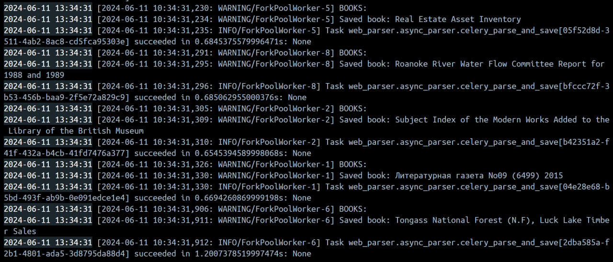

Вызов парсера из FastAPI через очередь
Задачи
- Добавить зависимости для Celery и Redis в проект.
- Создать файл конфигурации для Celery. Определть задачу для парсинга URL, которая будет выполняться в фоновом режиме.
- Обновить Docker Compose файл.
- Добавить в FastAPI приложение маршрут для асинхронного вызова парсера.
Настройка Celery
Для настройки Celery в приложении web_parser был создан новый файл для настройки зависимостей. В качестве брокера сообщений используется Redis. Дополнительно была настроена конфигурация приложения Celery для работы с json-данными.
celery_parser.py
from celery import Celery
celery_app = Celery(
"tasks", broker="redis://redis:6379/0", backend="redis://redis:6379/0"
)
celery_app.conf.update(
task_serializer="json",
accept_content=["json"],
result_serializer="json",
timezone="UTC",
enable_utc=True,
)
Изменение docker-compose
Далее были внесены изменения в файл docker-compose.yml. Теперь будут упаковываться сервисы Celery и Redis, также добавлены зависимости между сервисами.
docker-compose.yml
version: '3.8'
services:
db:
image: postgres:16
container_name: db
environment:
- POSTGRES_USER=postgres
- POSTGRES_PASSWORD=M1m1m1m1
- POSTGRES_DB=library
- POSTGRES_HOST_AUTH_METHOD=trust
- PGDATA=/var/lib/postgresql/data/pgdata
ports:
- "5434:5432"
web:
build:
context: .
dockerfile: /app/Dockerfile
restart: always
depends_on:
- db
- web_parser
- redis
- celery_worker
environment:
DB_ADMIN: postgresql://postgres:M1m1m1m1@db/library
command: sh -c "sleep 10 && uvicorn app.main:app --host 0.0.0.0 --port 8000"
ports:
- "8000:8000"
web_parser:
build:
context: .
dockerfile: /web_parser/Dockerfile
restart: always
depends_on:
- db
environment:
DB_ADMIN: postgresql://postgres:M1m1m1m1@db/library
command: sh -c "sleep 10 && uvicorn web_parser.main:app --host 0.0.0.0 --port 8002"
ports:
- "8002:8002"
redis:
image: redis:latest
container_name: redis
ports:
- "6379:6379"
celery_worker:
build:
context: .
dockerfile: /web_parser/Dockerfile
command: celery -A web_parser.async_parser worker --loglevel=info
depends_on:
- redis
- db
Добавление новых эндпоинтов
В основное приложение и приложение-парсер были добавлены новые эндпоинты, чтобы можно было асинхронно собирать данные о книгах.
web_parser/main.py
@app.post("/celery_parse_books")
def parse_books(session: Session = Depends(get_session)):
urls = fetch_random_book_ids(20)
for url in urls:
celery_parse_and_save.delay(url)
return {"message": "Parsing started"}
app/main.py
@app.post("/celery_parse_books/")
def celery_book_parser(session: Session = Depends(get_session)):
headers = {"accept": "application/json"}
try:
response = requests.post(
"http://web_parser:8002/celery_parse_books",
headers=headers,
)
response.raise_for_status()
return {"message": "Parsing successful"}
except:
raise HTTPException(status_code=500, detail="Parsing unsuccessful")
Теперь можно запускать асинхронный парсинг книг через очередь.
